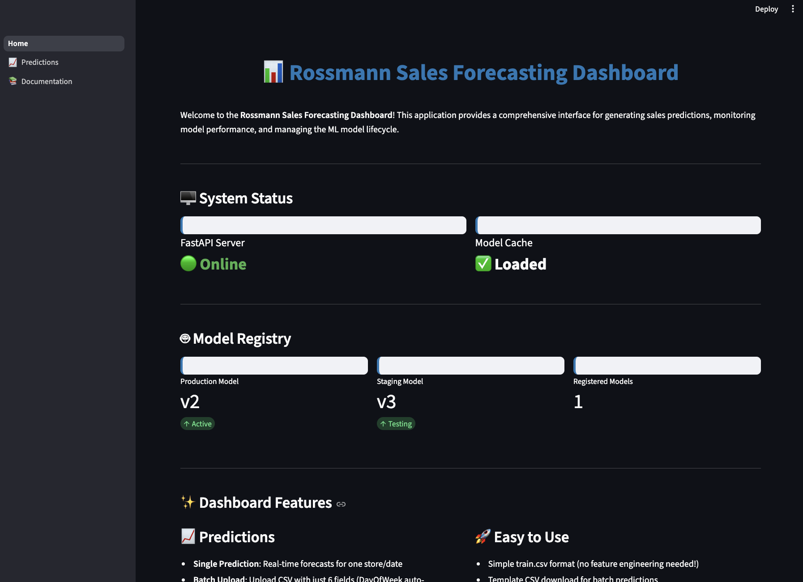

flowchart LR
A["📥 Input Data"] --> B["🤖 Model"]
B --> C["📤 Predictions"]
style A fill:#e1f5fe
style B fill:#fff3e0
style C fill:#e8f5e9
Prototyping Deployment & Monitoring
Bridging the gap between classroom and industry
This series shares best practices and industry standards not always covered in coursework — practical skills that can differentiate you early in your career.
Today’s Goal
Walk out knowing how to take a trained model and make it into something people can actually use.
Experiments and registered models don’t create value.
They help us find the best model.
The Reality
Models don’t create value by existing. They create value by being used.
What typically happens:
Stakeholders don’t want your code
They want your answers.
Remember Your Users
Your ML system will be used by stakeholders who:
Our system must hide the technical nuances.
Learning What Goes Into Deployment
Part of this class is understanding what it takes to deploy a model.
The reality:
We start by demonstrating how our models could be usable to stakeholders.
Deployment
Making a trained model accessible so it can receive inputs and return predictions.
flowchart LR
A["📥 Input Data"] --> B["🤖 Model"]
B --> C["📤 Predictions"]
style A fill:#e1f5fe
style B fill:#fff3e0
style C fill:#e8f5e9
Warning
Unfortunately, this simple view hides the complexity of what it really takes to deploy a model in production!
flowchart LR
User["👤 <b>User</b><br/><i>Stakeholder, Analyst,<br/>Business User</i>"]
subgraph UI["User Interface Layer"]
Web["Web UI<br/><i>Streamlit, Gradio, React</i>"]
Mobile["Mobile Apps<br/><i>iOS, Android</i>"]
end
subgraph API["API Layer"]
Gateway["API Gateway<br/><i>Kong, AWS API Gateway</i>"]
Auth["Authentication<br/><i>OAuth2, JWT</i>"]
end
subgraph Serving["Model Serving"]
FastAPI["FastAPI/Flask"]
ModelServer["Model Server<br/><i>TensorFlow Serving, Triton</i>"]
end
subgraph Registry["Model Registry & Versioning"]
MLflow["MLflow Registry"]
Storage["Model Storage<br/><i>S3, GCS, Azure Blob</i>"]
end
subgraph Infra["Infrastructure"]
Container["Containers<br/><i>Docker</i>"]
Orchestration["Orchestration<br/><i>Kubernetes, ECS</i>"]
LoadBalancer["Load Balancer<br/><i>NGINX, AWS ALB</i>"]
end
subgraph Monitor["Monitoring & Logging"]
Metrics["Metrics<br/><i>Prometheus, CloudWatch</i>"]
Drift["Drift Detection<br/><i>Evidently, WhyLabs</i>"]
Logs["Logging<br/><i>ELK Stack, Splunk</i>"]
end
subgraph CICD["CI/CD Pipeline"]
Test["Testing<br/><i>Pytest, Great Expectations</i>"]
Deploy["Deployment<br/><i>GitHub Actions, Jenkins</i>"]
Version["Version Control<br/><i>Git, DVC</i>"]
end
User --> Web
User --> Mobile
Web --> Gateway
Mobile --> Gateway
Gateway --> Auth
Auth --> FastAPI
FastAPI --> ModelServer
ModelServer --> MLflow
MLflow --> Storage
FastAPI --> Container
Container --> Orchestration
Orchestration --> LoadBalancer
FastAPI --> Metrics
FastAPI --> Drift
FastAPI --> Logs
Version --> Test
Test --> Deploy
Deploy --> Container
style User fill:#ffebee,stroke:#c62828,stroke-width:3px
style UI fill:#e1f5fe
style API fill:#f3e5f5
style Serving fill:#fff3e0
style Registry fill:#e8f5e9
style Infra fill:#fce4ec
style Monitor fill:#fff9c4
style CICD fill:#f0f4c3
Production deployment requires:
Reality Check
Most data science teams don’t have this. Especially not for a class project.
We may not build the entire production system…
But we can build working prototypes.
A prototype simplifies the architecture.
But when done smartly, it doesn’t add tech debt.
flowchart LR
A["🧪 Models"] --> B["🔧 Prototype System"]
B --> C["🏭 Production"]
style A fill:#ffcdd2
style B fill:#4caf50,stroke:#2e7d32,stroke-width:4px
style C fill:#e1f5fe
Note
Notice what’s NOT on this list: scalability, security, monitoring, CI/CD. Those matter for production. For a prototype, usability is what counts.
flowchart LR
User["👤 <b>User</b>"] --> A["<b>Streamlit</b><br/>User interface"]
A --> B["<b>FastAPI</b><br/>Model serving"]
B --> C["<b>MLflow</b><br/>Model registry"]
style User fill:#ffebee,stroke:#c62828,stroke-width:3px
style A fill:#e8f5e9
style B fill:#fff3e0
style C fill:#e1f5fe
| Component | Role | Why |
|---|---|---|
| Streamlit | User-facing interface | No frontend skills needed |
| FastAPI | Serve predictions via API | Fast, Python-native, auto-docs |
| MLflow | Model versioning & loading | Track and retrieve models |
flowchart LR
A["👤 User"] --> B["🖥️ Streamlit UI"]
B -->|"API Request"| C["⚡ FastAPI"]
C -->|"Load Model"| D["📦 MLflow Registry"]
D --> C
C -->|"Feature Engineering<br/>+ Prediction"| E["🤖 Model"]
E --> C
C -->|"Log"| F["📊 Prediction DB"]
C -->|"Response"| B
B -->|"Display"| A
style A fill:#f3e5f5
style B fill:#e8f5e9
style C fill:#fff3e0
style D fill:#e1f5fe
style E fill:#fce4ec
style F fill:#f5f5f5
| Layer | Responsibility | User Sees? |
|---|---|---|
| Streamlit | Input forms, result display, monitoring dashboards | Yes |
| FastAPI | Feature engineering, model serving, prediction logging | No |
| MLflow | Model storage, versioning, stage management | No |
| SQLite | Prediction history, drift detection data | No |
The user sees the interface.
The system handles the complexity.
Sales forecasting for 1,115 Rossmann retail stores across Europe.
flowchart TD
A["XGBoost<br/>60%"] --> D["Ensemble"]
B["LightGBM<br/>30%"] --> D
C["CatBoost<br/>10%"] --> D
D --> E["Prediction"]
style A fill:#e1f5fe
style B fill:#e8f5e9
style C fill:#fff3e0
style D fill:#f3e5f5
style E fill:#fce4ec
Next step:
How can we turn this into a prototype that a user could actually interact with, without needing to understand the underlying model or feature engineering?
During the demo, pay attention to:
System Architecture:
flowchart TB
subgraph Registry["MLflow Model Registry (Port 5000)"]
MR[(Model Storage)]
MV[Version Management]
MS[Stage Tracking]
end
subgraph API["FastAPI Service (Port 8000)"]
direction TB
ML[Model Loader]
PP[Prediction Pipeline]
FE[Feature Engineering]
VAL[Input Validation]
end
subgraph UI["Streamlit Dashboard (Port 8501)"]
direction TB
SP[Single Prediction]
BP[Batch Upload]
VIZ[Results Display]
end
subgraph User["End Users"]
end
User --> UI
UI -->|HTTP POST| API
API -->|Load Model| Registry
Registry -->|Ensemble Model| API
API -->|Predictions| UI
UI -->|Results| User
style Registry fill:#e1f5ff
style API fill:#fff4e1
style UI fill:#f0f0f0
style User fill:#e8f5e9
File Structure:
rossmann-forecasting/
├── deployment/
│ ├── api/
│ │ └── main.py ← FastAPI app
│ └── streamlit/
│ ├── Home.py ← Main UI
│ └── pages/ ← Individual UI pages
│ ├── 1_📊_Predictions.py
│ └── 2_📈_Monitoring.py
├── mlruns/ ← MLflow tracking
│ └── models/ ← Model artifacts
│
└── src/ ← Source codeNote
FastAPI will use scripts from the src/ directory for input validation, feature engineering, making predictions, etc.
Last class: MLflow manages and versions our models
This class: We need a way to interact with those models
REST API (Application Programming Interface)
A standardized way to send requests and receive responses over HTTP.
Why FastAPI?
What it provides:
/predict endpoint for predictions/health endpoint for status checks/docs interactive API explorerThe limitation:
FastAPI is not a user interface. It’s designed for developers and systems, not stakeholders.
System Flow:
flowchart LR
A[👤 User] --> B[🎨 Streamlit]
B --> C[⚡ FastAPI]
C --> D[📦 MLflow]
D --> C
C --> B
B --> A
style A fill:#e8f5e9
style B fill:#e1f5fe
style C fill:#fff3e0
style D fill:#f3e5f5
Launch the full system:
http://localhost:8501
Recommended approach:
/predict endpoint
/docs interfaceLeverage AI tools!
Tasks like these are perfect for ChatGPT, Claude, or Gemini. There are thousands of FastAPI + Streamlit examples online, so these tools excel at generating working prototypes.
Think about your own project:
Project Planning
Let’s spend ~15min working in your group to discuss these questions and outline what a prototype might look like.
aka crap.0
Minimum Viable Product
The smallest thing you can build that demonstrates progress towards your ML system.
I have LOW expectations for the MVP.
Components don’t need to be fully integrated yet.
What’s acceptable:
What I’m looking for:
Bonus: System Integration (Extra Credit)
If you build a FastAPI or Streamlit app to showcase predictions, you can earn extra credit — but it’s NOT required for the MVP.
5-10 minute recorded presentation and demo covering:
Problem & Purpose: What problem are you solving and why does it matter?
System Diagram: High-level architecture showing data ingestion, processing, feature engineering, model experimentation, and planned deployment
Prototype Demo: Show what you’ve built - data pipeline, model training, experiment tracking, etc.
Challenges & Next Steps: What problems do you anticipate? What remains to be done?
| Component | Points |
|---|---|
| Clarity of Problem & ML System Purpose | 4 pts |
| Clarity of ML System Diagram | 4 pts |
| Implementation of Data Pipeline | 4 pts |
| ML Model Development | 4 pts |
| Presentation Quality | 4 pts |
| System Integration | Extra Credit (+0-2 pts) |
Total: 20 points (+ extra credit)
Clarity of Problem & ML System Purpose (4 pts)
Clarity of ML System Diagram (4 pts)
Implementation of Data Pipeline (4 pts)
ML Model Development (4 pts)
Presentation Quality (4 pts)
System Integration (Extra Credit)
After submitting your MVP:
Each student must complete peer reviews:
Failure to complete peer review = 10% deduction from engagement grade
Important Submission Details:
If you’re uploading a 4.7 MB MP4 at 11:59 PM, don’t expect it to complete on time — and don’t expect extra time from the instructor.
| Resource | Link |
|---|---|
| FastAPI docs | fastapi.tiangolo.com |
| Streamlit docs | docs.streamlit.io |
| MLflow docs | mlflow.org |
| Rossmann project | github.com/bradleyboehmke/rossmann-forecasting |
| Workshop materials | See course repository |